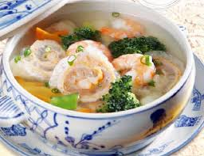

Canh tôm nấu bóng thả

- Khẩu phần 4
- Chuẩn bị 15 phút
- Thực hiện 25 phút
Nguyên liệu
- 200g tôm thẻ
- 100g bóng cá
- 100g giò sống
- 1 quả trứng gà
- 200g bông cải xanh
- 1/2 củ cà rốt
- 1 nhánh hành lá
- 1 thìa cà phê muối
- 2 thìa cà phê hạt nêm từ Thịt Thăn, Xương
Ống và Tủy - Bổ sung Vitamin A
- 1/3 thìa cà phê tiêu
Hướng dẫn thực hiện
- Tôm thẻ bỏ đầu, lột hết vỏ
- Bóng cá ngâm mềm, để ráo, cắt miếng
- Trứng gà đánh tan, chiên thật mỏng
- Bông cải xanh, trắng rửa sạch, để ráo, cắt miếng vừa ăn
- Cà rốt gọt vỏ, tỉa hoa, cắt lát mỏng
- Trải 1 lớp bóng cá ra khay, phết vào 1 lớp giò mỏng, đặt lên 1 lớp bóng
cá, 1 miếng trứng chiên, sau cùng đặt lớp bóng cá lên, cuộn tròn lại, đem
hấp chín, cắt lát vừa ăn
- Nấu sôi 500ml nước sạch, cho tôm vào nấu sôi bùng, hạ lửa, vớt bọt, cho
bóng cá, bông cải, cà rốt vào, nấu khoảng 4 phút, nêm muối, hạt nêm cho vừa
ăn
- Múc canh bóng thả ra bát, rắc hành lá cắt nhỏ và tiêu vào, dùng nóng.
- Mách Nhỏ: Trước khi cho tôm vào nồi nước sôi nên cho vào 1/2 thìa súp
nước mắm, tôm sẽ có màu đỏ, thịt dai và ngọt hơn. Khi cho tôm vào nên nấu
với lửa lớn.